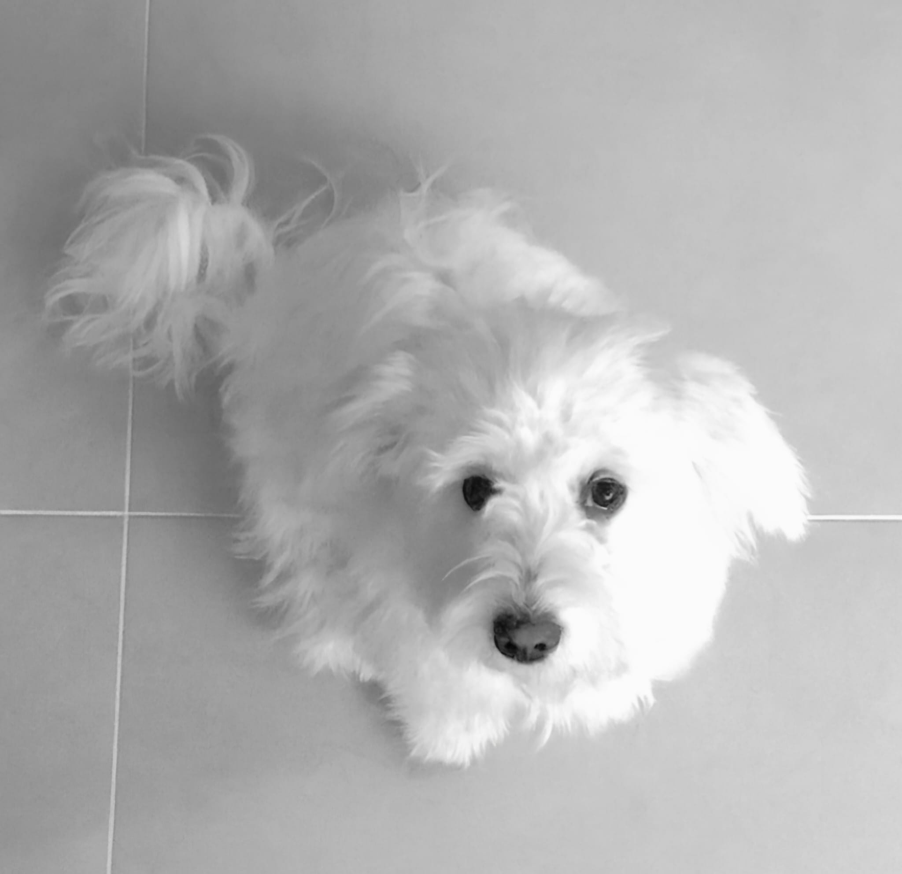

Ekibimiz
Av. Talha Ağaç
Kurucu Ortak | Ağaç & Şentürk
İstanbul Ticaret Üniversitesi Hukuk Fakültesi'nden mezun olan Av. Talha Ağaç, lisans eğitimi süresince özellikle ticaret hukuku, borçlar hukuku ve icra-iflas hukuku alanlarında uzmanlaşmıştır. Üniversite yıllarından itibaren çeşitli hukuk bürolarında edindiği deneyimlerle birlikte, farklı sektörlerde faaliyet gösteren şirketlere yönelik danışmanlık ve dava süreçlerinde aktif rol almıştır.
Ağaç & Şentürk'ün kurucu ortağı olarak, bireysel ve kurumsal müvekkillerine hukukun farklı disiplinlerinde etkin, çözüm odaklı ve stratejik yaklaşımlar sunmaktadır. Özellikle ticaret hukuku, sözleşmeler hukuku, iş hukuku ve ceza hukuku alanlarında yoğun olarak çalışmaktadır.
Disiplinli çalışma tarzı, müvekkil odaklı yaklaşımı ve hukuki süreçlerdeki analitik düşünme kabiliyeti ile bilinen Av. Talha Ağaç, aynı zamanda güncel mevzuat ve yargı kararlarını yakından takip ederek her bir dosyada özgün çözümler üretmeyi hedeflemektedir.
Av. Yücel Şentürk (LL.M)
Kurucu Ortak | Ağaç & Şentürk
Av. Yücel Şentürk, lisans eğitimini İstanbul Ticaret Üniversitesi Hukuk Fakültesi'nde tamamlamış, ardından İstanbul Ticaret Üniversitesi Sosyal Bilimler Enstitüsü Özel Hukuk Yüksek Lisans Programından oy birliği ile kabul edilen “Anonim Şirket Genel Kurul Kararının İptali Davasının Usul Hukuku Bakımından Değerlendirilmesi” başlıklı tez çalışması ile mezun olmuştur. Akademik çalışmaları süresince özellikle borçlar hukuku, ticaret ve sözleşmeler hukuku ile medeni usul hukuku alanlarında derinleşmiştir.
Meslek hayatına başladığı günden bu yana, farklı ölçeklerdeki yerli ve yabancı şirketlere ticari sözleşmeler, kurumsal hukuk danışmanlığı ve uyuşmazlık çözümü konularında hukuki destek sağlamaktadır. Yargı süreçlerinde etkin temsil gücü ve stratejik yaklaşımıyla tanınan Av. Yücel Şentürk, aynı zamanda hukuki risk analizi ve önleyici hukuk danışmanlığı alanlarında da deneyim sahibidir.
Kurucu ortak olarak, müvekkillerine yalnızca mevcut sorunların çözümüne değil, geleceğe dönük hukuki stratejilerin oluşturulmasına odaklanan bir hizmet anlayışı sunmaktadır. İngilizce, Bulgarca ve Rusça yabancı dillerini bilmektedir.
Stj. Av. Feyzullah Yaşar
Stajyer Avukat | Ağaç & Şentürk
İstanbul Üniversitesi Hukuk Fakültesi'nden yüksek akademik başarı ile mezun olmuştur. Öğrenim hayatı boyunca ticaret hukuku, borçlar hukuku ve medeni usul hukuku alanlarında yoğun akademik çalışmalar yürütmüş; çeşitli öğrenci projeleri, seminerler ve bilimsel makaleler ile hukuk topluluklarında aktif rol almıştır.
Stajyer avukat olarak, dava dosyalarının hazırlanması, hukuki araştırmalar ve sözleşme incelemelerinde aktif katkı sunmaktadır. Ticaret ve sözleşmeler hukuku alanlarına ilgisi sayesinde projelerde yenilikçi ve sistematik bir yaklaşım benimsemektedir.

Uyap The LUNA
Psikolojik Destek ve Güvenlik Birimi Yöneticisi
LUNA, insan psikolojisi ve duygusal durum değişiklikleri üzerine "sezgisel" uzmanlığıyla ekibimizin motivasyonuna katkı sunar; ofisteki stresin azaltılması ve olumlu çalışma atmosferinin sürdürülmesinde aktif rol oynar.
Aynı zamanda ofisin güvenlik ve pozitif enerjisinden sorumludur; ziyaretçileri güler yüzle karşılar, ekip içi uyumu güçlendirir ve yoğun mesai günlerinde moral kaynağı olur.